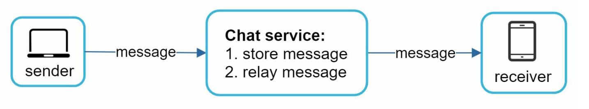
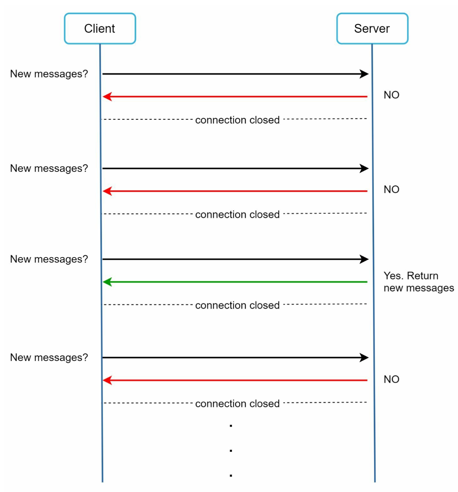
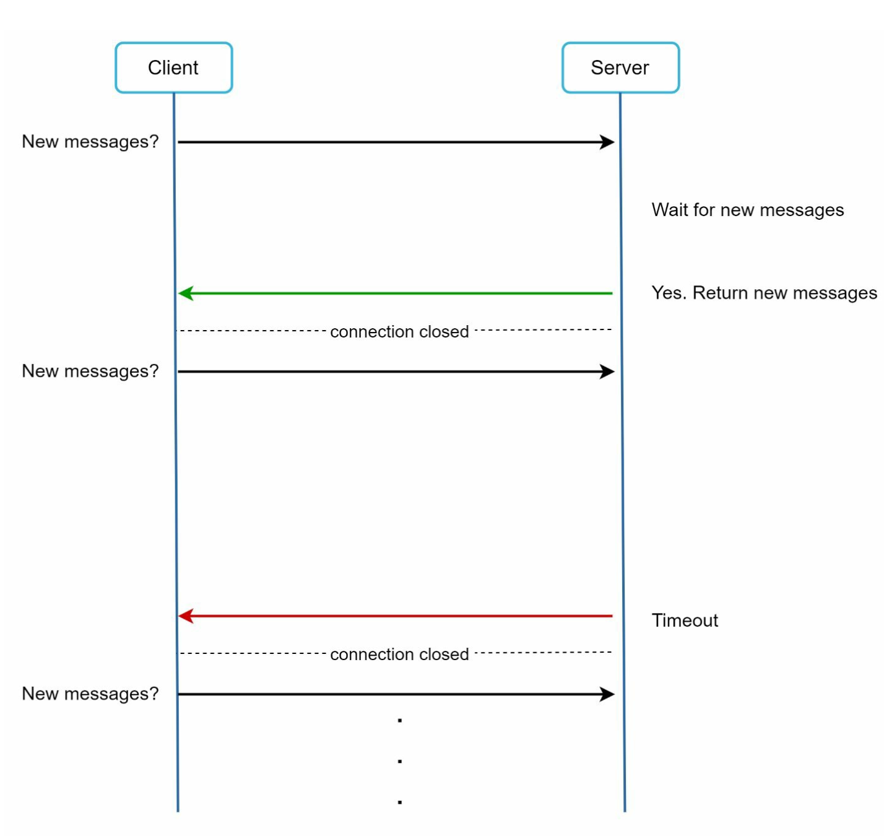
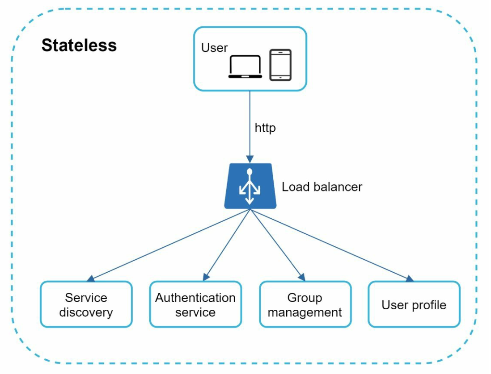
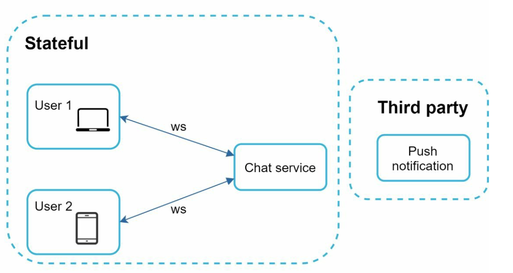
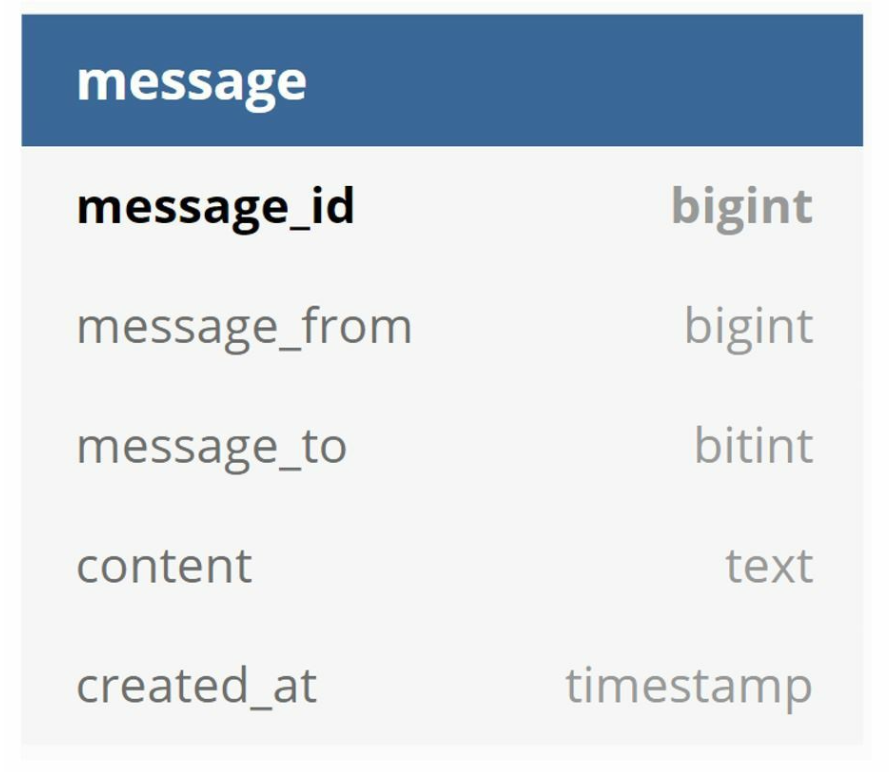
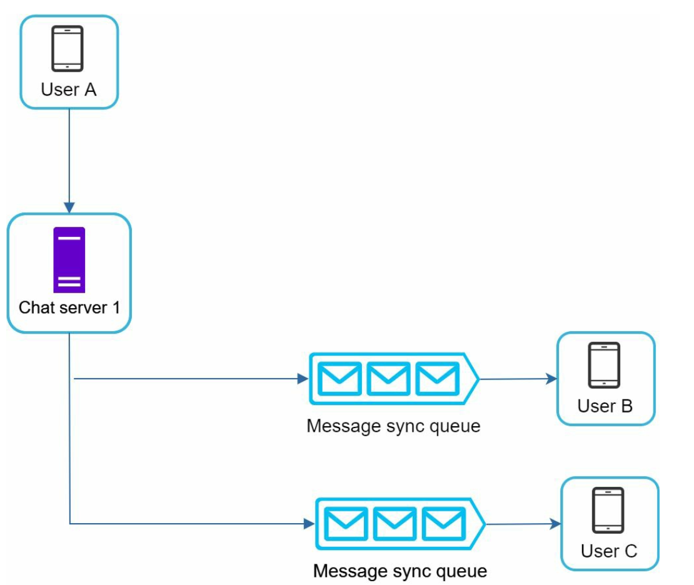
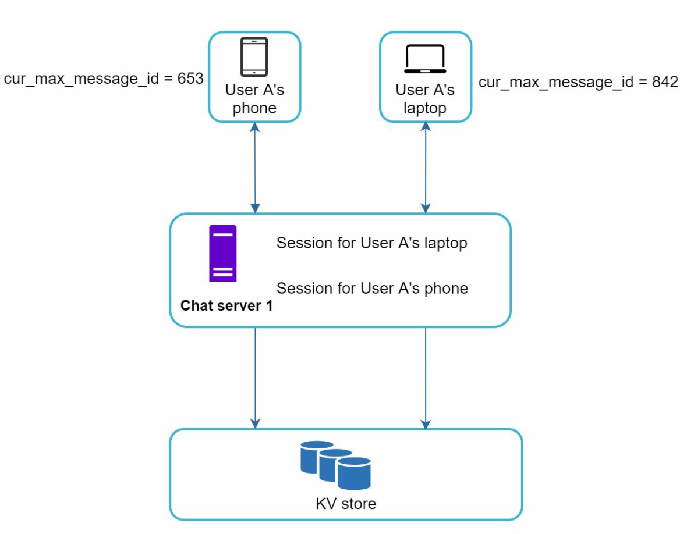
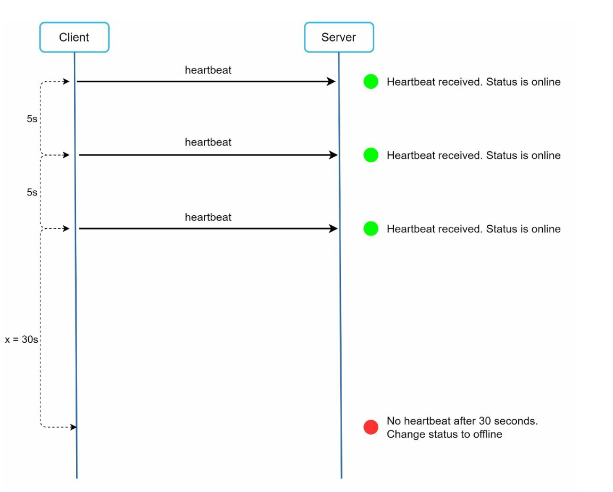

Chapter 12: Design a Chat System
Introduction
A chat system supports real-time messaging between users. This chapter focuses on designing a chat app that includes:
- One-on-One Chat
- Group Chat (max 100 users)
- Online Presence Indicators
- Multiple Device Support
- Push Notifications
The system targets 50 million daily active users (DAU) and stores chat history permanently.
Step 1: Understanding the Problem
Requirements
1. Features:
- One-on-one and group chat (max 100 members).
- Text-based messages (up to 100,000 characters).
- Online/offline indicators.
- Support for multiple devices.
- Push notifications.
2. Scale: Design for 50 million DAU.
3. Storage: Permanent chat history.
Step 2: High-Level Design
Communication Protocols
1. Sender Side: HTTP for sending messages, leveraging persistent connections for efficiency.

2. Receiver Side:
- Polling:
- Client periodically asks the server if there are messages available.
- Inefficient due to frequent, redundant requests.

- Long Polling:
- Keeps the connection open until messages arrive.
- Inefficient for inactive users.

- WebSocket:
- A bi-directional, persistent connection for real-time communication, chosen for both sending and receiving messages.
- Uses WebSockets (ws) protocol for sending and recieving messages.

Components


1. Stateless Services:
- Handle signup, login, and user profile management.
- Integrated with service discovery to recommend the best chat server.
- Chat servers maintain persistent WebSocket connections.
- Responsible for message delivery and synchronization.
- Push notification services notify users about new messages.
- Refer Notification System chapter for notifications implementation.
2. Stateful Services:
3. Third-Party Integration:
Design
The client maintains a persistent WebSocket connection to a chat server for real-time messaging.

- Chat servers facilitate message sending/receiving.
- Presence servers manage online/offline status.
- API servers handle everything including user login, signup, change profile, etc.
- Notification servers send push notifications.
- Finally, the key-value store is used to store chat history.Key-value stores for the database of the chat history data for following reasons:
- It allows easy horizontal scaling.
- KV stores provide very low latency to access data.
- Relational databases do not handle long tail of data well. When the indexes grow
- KV stores are adopted by other proven reliable chat applications. For example,
large, random access is expensive.
both Facebook messenger and Discord.
Following are the data models for one-to-one chat and group chat.
- The primary key is message id, which helps to decide message sequence.
- For the group chat the composite primary key is (channel_id, message_id).
- IDs can be generated using a global 64-bit sequence number generator like Snowflake.
- A better approach is to use local sequence number generator. Local means IDs are only unique within a group.
- The reason why local IDs work is that maintaining message sequence within one-on-one channel or a group channel is sufficient.


Step 3: Design Deep Dive
Service Discovery

- The primary role of service discovery is to recommend the best chat server for a client based
- Uses Apache Zookeeper to allocate chat servers based on criteria like geographic location and server capacity.
- Ensures efficient load distribution and minimizes latency.
on the criteria like geographical location, server capacity.
Messaging Flows
One-on-One Chat
1. User A sends a message to Chat Server 1.
2. Chat Server 1 assigns a unique message ID and stores the message in a key-value store.
3. If User B is online, the message is forwarded to Chat Server 2, maintaining a persistent WebSocket connection.
4. If User B is offline, a push notification is sent.
Group Chat

- Messages are copied to individual inboxes for each recipient in the group.
- Simplifies synchronization but becomes expensive for larger groups.
- On the recipient side, a recipient can receive messages from multiple users. Each recipient
has an inbox (message sync queue) which contains messages from different senders.
Message Synchronization
Many users have multiple devices. We need to synchronize the message across the devices.
Each device maintains a variable called cur_max_message_id, which keeps track of the latest
message ID on the device. Messages that satisfy the following two conditions are considered
as news messages:

- The recipient ID is equal to the currently logged-in user ID.
- Message ID in the key-value store is larger than cur_max_message_id
Online Presence
1. Heartbeat Mechanism:

- Clients send periodic heartbeats to presence servers to indicate they are online.
- If no heartbeat is received within a threshold (for eg x = 30), the user is marked offline.
2. Fanout Model:

- Presence updates are pushed to friends using a publish-subscribe model in which each friend pair maintains a channel.
- When User A’s online status changes, it publishes the event to three channels, channel A-B, A-C, and A-D.
- Those three channels are subscribed by User B, C, and D, respectively which get the online status updates.
- The above design is effective for a small user groups.
Additional Considerations
Scalability
- Horizontal Scaling: Add servers as user count increases.
- Load Balancing: Distribute traffic evenly across servers.
- Caching: Reduce database load and improve latency.
Error Handling
- Retry Mechanisms: Handle message delivery failures with retries and queuing.
- Server Failures: Use service discovery to allocate new servers in case of failures.
Future Extensions
1. Media Support: Add handling for photos and videos, including compression and cloud storage.
2. End-to-End Encryption: Ensure message privacy.
3. Client-Side Caching: Reduce data transfer for better performance.
4. Improved Load Times: Use geographically distributed caching networks.